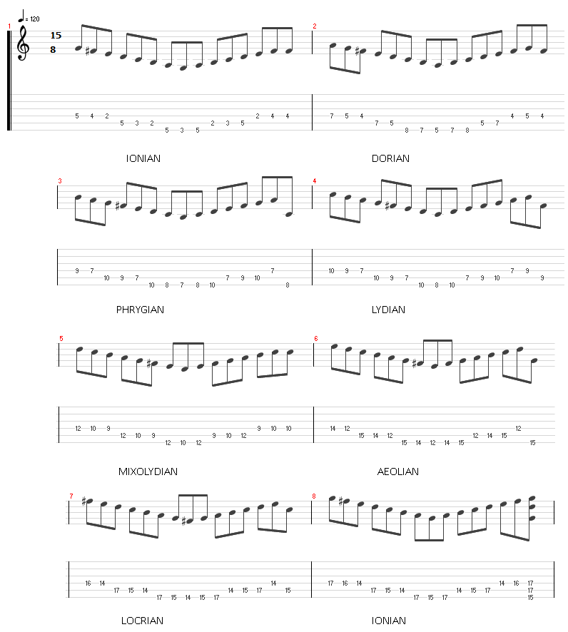

GROWL
I'd rather be playing guitar
FR
 EN
EN
This week I've been trying to expand my complex rhythmic playing. For me this is one of the toughest elements of keeping fresh in my playing. That being said it often gives me the highest yield of interesting composition material when I mess with it. In order to make things hard for myself and to keep my head in the game I've decided to use a pattern across modes. That way this exercise gives you a two for one! You're developing great awareness for modes AND focusing on odd rhythm.
MIKE PORTNOY
When it feels like I am getting stuck in my ways or running out of things to play I like to watch Mike Portnoy videos on Youtube. Whilst I am not a huge Dream Theatre fan I hold their music in very high esteem. Portnoy in particular has a rhythmic ease and vocabulary that is always fresh. In the video I saw this week he was playing a 15/8 drum pattern. He was thinking of it as a 4/4 then a 7/8. If this gives you a feeling of cold dread, read my rhythm primer. I turned to that excellent piece of freeware Hydrogen drum machine and made myself a loop based on this pattern. I threw in a couple of quick snare 16ths to help stir the pot and also set the second half of the pattern with open hi-hats on the up-beats.
Grab the pattern here(mp3).
THE EXERCISE
Choose a note as starting point on the D string. This is where you will play your major scale. Perform the pattern tabbed below.
The basics of the pattern is that it is a descending scale that turns back around on its 6th string root note. The odd man out is that the final note in the pattern is the distinctive note of that mode. For major I call that the major 7; Dorian the #6, Lydian #4 etc. This distinctive note is played on the beat 15 of our drum pattern. Continue along the E string until you have cycled back to the Ionian.
COUNTING THROUGH THE BEAT
Perhaps the easiest way to think through this exercise is to count to 8 and then to 7. The rhythm should get easy pretty quickly but finding your way to the distinctive note might not be!
EXTENSION
I recommend giving up looking at the tab as soon as you understand the pattern. That way you will be building better memory skills.
Naturally I recommend trying this exercise starting from Aoelian rather than Ionian too. For that matter why not choose any modal pattern as your starting point and play through the modal cycle from there.
Second, I definitely urge doing this exercise with different string roots ie: lowest note on A or on D. The scale shapes change once that pesky B string comes into play.
Try replacing the second group of 7 notes with an arpeggio (1,3,5) up and down, followed by OR including the distinctive note.
You could also try alternating descending and then ascending scales as you go through the pattern.
Anyway, there you go. Please enjoy it and treat every slip up as a fun distraction!